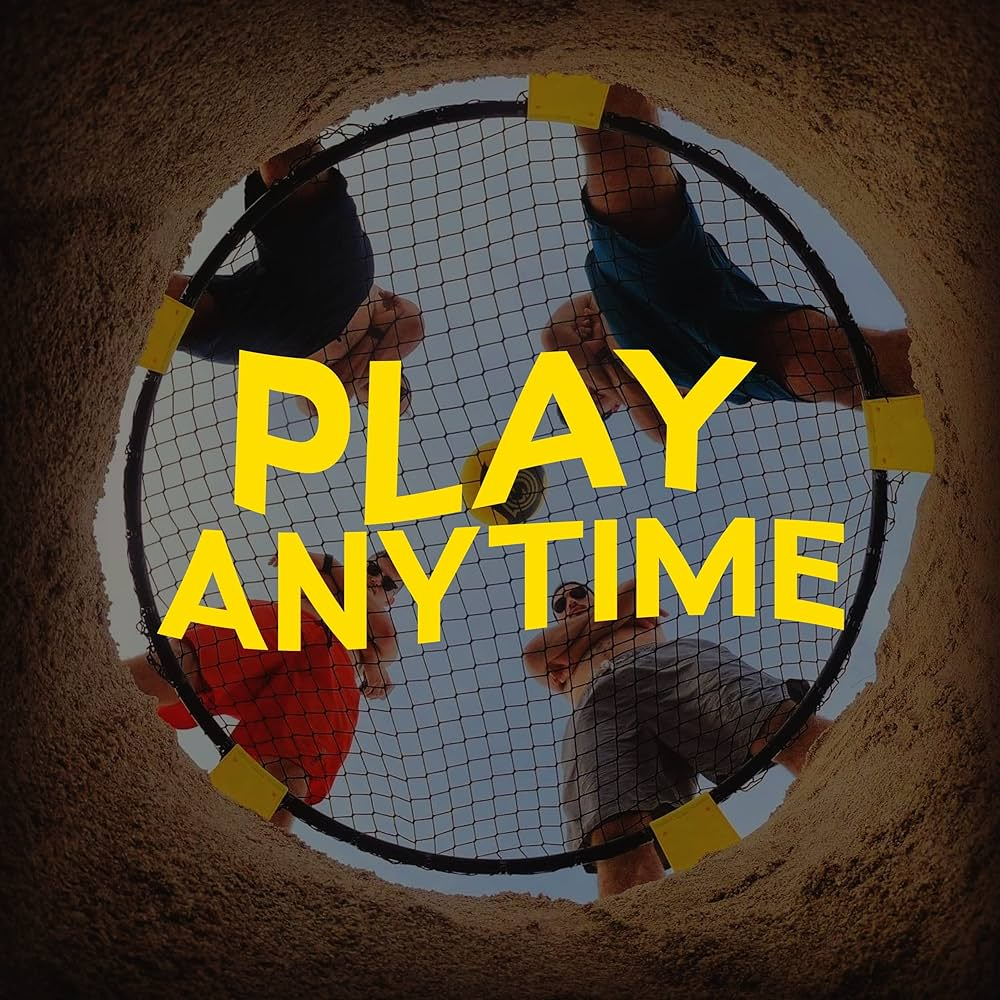
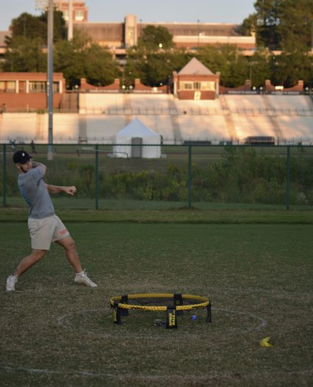
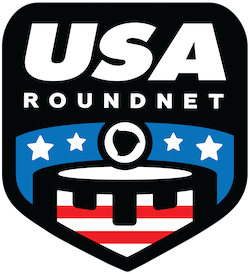

Activity Hub
Casual Play
Casual Play serves as a platform for UNCC students seeking a more relaxed and informal Spikeball experience, catering to those who prefer a non-professional setting. It offers an opportunity for 49er students to connect, socialize, and have fun while engaging in Spikeball activities.
 Casual Fun49er Club Information
View details regarding upcoming practices, games, and events. Learn more about the club and how to join if interested.
 Club InfoFuture Events
View upcoming information about future events hrld by the UNCC spikeball tean, as well as from events coordinated by Spikeball themselves!
 More Events